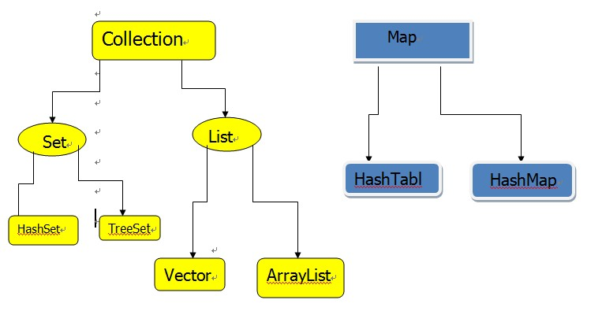
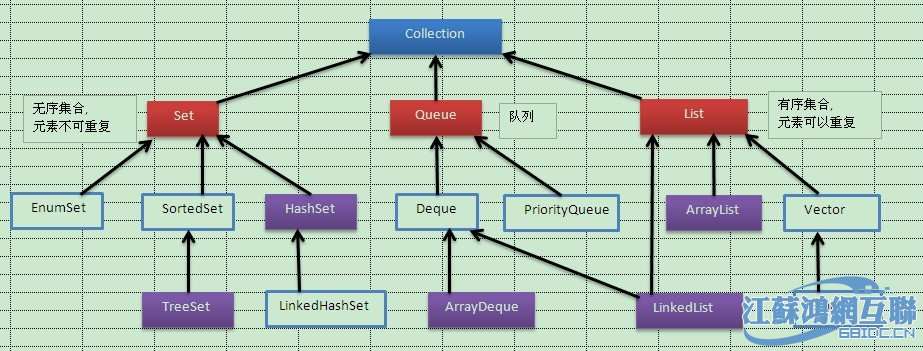

设计模式（面向对象）有七大原则，分别是： 1.开放-封闭原则 2.单一职责原则 3.依赖倒转原则 4.迪米特法则（也称为最小知识原则） 5.接口隔离原则 6.合成/聚合复用原则 7.里氏代换原则 详情参考 ：https://www.cnblogs.com/qingjiaowoxiaoxioashou/p/6273658.html
B-Tree是满足条件： d>=2，即B-Tree的度； h为B-Tree的高； 每个非叶子结点由n-1个key和n个指针组成，其中d
A和B选项的区别在于第3步和第4步，B中当i=999时，先执行步骤3，则i=i+2=1001,接着第4步s=s+1001,如此看来这种3、4步的写法求得的S会多加了一个i=1001.
1）编译器负责把java文件编译为class文件， 2）JAVA虚拟机（JVM）对class文件，进行加载、校验、执行， 故本题的答案为C。

补图：

无
1 public class Test {
2 public static void main(String args\[\]) {
3 int i = 7;
4 do {
5 System.out.println(--i);
6 --i;
7 } while (i != 0);
8 System.out.println(i);
9 }
10 }
略
选项B 应该是 释放锁就是删除 key。
这个场景是假设有一个 redis cluster，有 5 个 redis master 实例。然后执行如下步骤获取一把锁：
获取当前时间戳，单位是毫秒； 跟上面类似，轮流尝试在每个 master 节点上创建锁，过期时间较短，一般就几十毫秒； 尝试在大多数节点上建立一个锁，比如 5 个节点就要求是 3 个节点 n / 2 + 1； 客户端计算建立好锁的时间，如果建立锁的时间小于超时时间，就算建立成功了； 要是锁建立失败了，那么就依次之前建立过的锁删除； 只要别人建立了一把分布式锁，你就得不断轮询去尝试获取锁。
脏读 ： 脏读就是指当一个事务正在访问数据，并且对数据进行了修改，而这种修改还没有提交到数据库中，这时，另外一个事务也访问这个数据，然后使用了这个数据。 不可重复读 ： 是指在一个事务内，多次读同一数据。在这个事务还没有结束时，另外一个事务再修改数据。那么第一个事务两次读到的的数据可能是不一样的，因此称为是不可重复读。 幻读： 当某事物正在执行插入或删除操作同时，第二个事物也在操作此表的数据，就会显示有一行还未存在的数据，就像发生了幻觉一样。
解决办法：如果在操作事务完成数据处理之前，任何其他事务都不可以操作此数据，则可避免该问题。
Java虚拟机管理的内存包括几个运行时数据内存：方法区、虚拟机栈、本地方法栈、堆、程序计数器，其中方法区和堆是由线程共享的数据区，其他几个是线程隔离的数据区
redis 内存淘汰机制有以下几个：
noeviction: 当内存不足以容纳新写入数据时，新写入操作会报错，这个一般没人用吧，实在是太恶心了。 allkeys-lru：当内存不足以容纳新写入数据时，在键空间中，移除最近最少使用的 key（这个是最常用的）。 allkeys-random：当内存不足以容纳新写入数据时，在键空间中，随机移除某个 key，这个一般没人用吧，为啥要随机，肯定是把最近最少使用的 key 给干掉啊。 volatile-lru：当内存不足以容纳新写入数据时，在设置了过期时间的键空间中，移除最近最少使用的 key（这个一般不太合适）。 volatile-random：当内存不足以容纳新写入数据时，在设置了过期时间的键空间中，随机移除某个 key。 volatile-ttl：当内存不足以容纳新写入数据时，在设置了过期时间的键空间中，有更早过期时间的 key 优先移除。
ActiveMQ 基于 Java 开发的， RabbitMQ 是基于 erlang 开发的。 所以选项A 错误。 B、C、D都正确。
| 特性 | ActiveMQ | RabbitMQ | RocketMQ | Kafka |
|---|---|---|---|---|
| 单机吞吐量 | 万级，比 RocketMQ、Kafka 低一个数量级 | 同 ActiveMQ | 10 万级，支撑高吞吐 | 10 万级，高吞吐，一般配合大数据类的系统来进行实时数据计算、日志采集等场景 |
| topic 数量对吞吐量的影响 | topic 可以达到几百/几千的级别，吞吐量会有较小幅度的下降，这是 RocketMQ 的一大优势，在同等机器下，可以支撑大量的 topic | topic 从几十到几百个时候，吞吐量会大幅度下降，在同等机器下，Kafka 尽量保证 topic 数量不要过多，如果要支撑大规模的 topic，需要增加更多的机器资源 | ||
| 时效性 | ms 级 | 微秒级，这是 RabbitMQ 的一大特点，延迟最低 | ms 级 | 延迟在 ms 级以内 |
| 可用性 | 高，基于主从架构实现高可用 | 同 ActiveMQ | 非常高，分布式架构 | 非常高，分布式，一个数据多个副本，少数机器宕机，不会丢失数据，不会导致不可用 |
| 消息可靠性 | 有较低的概率丢失数据 | 基本不丢 | 经过参数优化配置，可以做到 0 丢失 | 同 RocketMQ |
| 功能支持 | MQ 领域的功能极其完备 | 基于 erlang 开发，并发能力很强，性能极好，延时很低 | MQ 功能较为完善，还是分布式的，扩展性好 | 功能较为简单，主要支持简单的 MQ 功能，在大数据领域的实时计算以及日志采集被大规模使用 |
分布式服务接口，只靠数据库的事务是保证不了幂等性的。 选项D错误。
所谓幂等性，就是说一个接口，多次发起同一个请求，你这个接口得保证结果是准确的，比如不能多扣款、不能多插入一条数据、不能将统计值多加了 1。这就是幂等性。
其实保证幂等性主要是三点：
要求是支付一个订单，必须插入一条支付流水，order_id 建一个唯一键 unique key。你在支付一个订单之前，先插入一条支付流水，order_id 就已经进去了。你就可以写一个标识到 redis 里面去，set order_id payed，下一次重复请求过来了，先查 redis 的 order_id 对应的 value，如果是 payed 就说明已经支付过了，你就别重复支付了。
分布式事务的实现主要有以下 5 种方案：
XA 方案 TCC 方案 本地消息表 可靠消息最终一致性方案 最大努力通知方案 详情参考 分布式事务
缓存雪崩的事前事中事后的解决方案如下。
Cache Aside Pattern 最经典的缓存+数据库读写的模式，就是 Cache Aside Pattern。
读的时候，先读缓存，缓存没有的话，就读数据库，然后取出数据后放入缓存，同时返回响应。 更新的时候，先更新数据库，然后再删除缓存。 为什么是删除缓存，而不是更新缓存？
原因很简单，很多时候，在复杂点的缓存场景，缓存不单单是数据库中直接取出来的值。
比如可能更新了某个表的一个字段，然后其对应的缓存，是需要查询另外两个表的数据并进行运算，才能计算出缓存最新的值的。
另外更新缓存的代价有时候是很高的。是不是说，每次修改数据库的时候，都一定要将其对应的缓存更新一份？也许有的场景是这样，但是对于比较复杂的缓存数据计算的场景，就不是这样了。如果你频繁修改一个缓存涉及的多个表，缓存也频繁更新。但是问题在于，这个缓存到底会不会被频繁访问到？
举个栗子，一个缓存涉及的表的字段，在 1 分钟内就修改了 20 次，或者是 100 次，那么缓存更新 20 次、100 次；但是这个缓存在 1 分钟内只被读取了 1 次，有大量的冷数据。实际上，如果你只是删除缓存的话，那么在 1 分钟内，这个缓存不过就重新计算一次而已，开销大幅度降低。用到缓存才去算缓存。
其实删除缓存，而不是更新缓存，就是一个 lazy 计算的思想，不要每次都重新做复杂的计算，不管它会不会用到，而是让它到需要被使用的时候再重新计算。像 mybatis，hibernate，都有懒加载思想。查询一个部门，部门带了一个员工的 list，没有必要说每次查询部门，都里面的 1000 个员工的数据也同时查出来啊。80% 的情况，查这个部门，就只是要访问这个部门的信息就可以了。先查部门，同时要访问里面的员工，那么这个时候只有在你要访问里面的员工的时候，才会去数据库里面查询 1000 个员工。
全对，IO和NIO的主要对比如下：